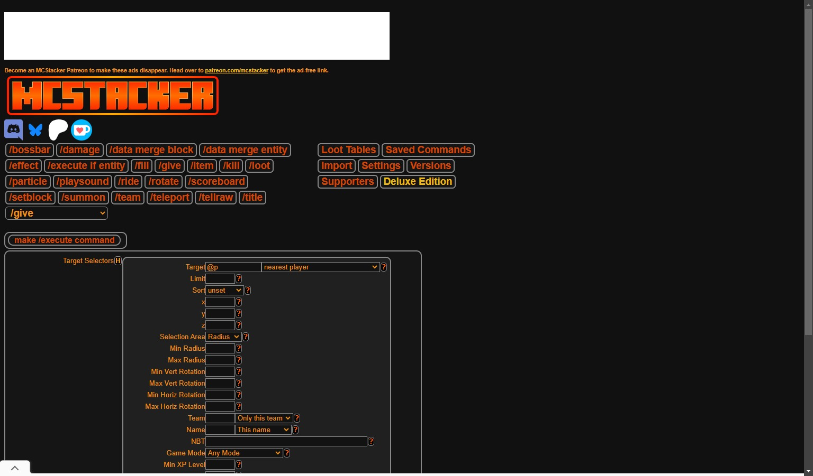

オヌヌメ○○系 #5
mcstacker.net
マイクラのコマンドを生成してくれるサイト
ものすごい複雑な設定もできるから自由度が高い
他の人が作ったコマンドを見ることもできる
有料版では広告が表示されなかったりするらしい
↓このサイトで作った手に持った状態でも食えるケーキ(java版の1.21用)
/give @p cake[item_name='"直接食えるケーキ"',rarity="rare",food={nutrition:7,saturation:7,can_always_eat:true,eat_seconds:4}] 1
